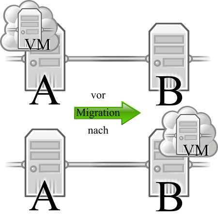

Ich stelle hier die ernüchternden Ergebnisse meiner Tests mit dem Teleport-Feature der Virtualisierungslösung VirtualBox von Oracle vor. Diese Tests hinterließen einen zwiespältigen Eindruck, da das Feature einen seit langem ausstehenden Bug hat, der scheinbar nie gefixt werden wird.
Ich benutze seit langem die Virtualisierungslösung VirtualBox von Oracle - sowohl für die Arbeit als auch privat. Während der Einsätze schöpfe ich aber nicht alle Features der Software aus: Die Features, die ich benötige, funktionieren hervorragend. Manchmal jedoch packt es mich - dann will ich Neues ausprobieren; Features nur um sagen zu können: "Ja, das habe ich auch schon getan!" Einer dieser Anfälle hat dafür gesorgt, sich mit dem Feature Teleport zu beschäftigen.
Teleport
Teleport heißt bei VirtualBox das Feature, das ich unter der Bezeichnung "Live-Migration" kennengelernt habe: Dabei geht es darum, einen virtuellen Rechner auf dem physischen Rechner A auf den physischen Rechner B zu verschieben. "Live" bedeutet dabei, daß Anwender, die Dienste der virtuellen Maschine in Anspruch nehmen, von dieser Migration nichts bemerken: die virtuelle Maschine arbeitet einfach weiter.
Oft wird dieses Feature, das nicht nur VirtualBox bietet, mittels des Szenarios erklärt, ohne Unterbrechung wichtiger Dienste Wartungen an der physischen Hardware vornehmen zu können. Im oben beschriebenen Beispiel wäre es also möglich, nach erfolgreicher Migration Rechner A herunterzufahren, um verschlissene Komponenten zu ersetzen.Setup
Als Vorbereitung dieses Tests muß man dafür sorgen, daß der Massenspeicher, der an die zu migrierende virtuelle Maschine angebunden ist, nicht an die beiden physischen Rechner A und B gebunden ist. Das habe ich über die Einrichtung eines iSCSI-Servers auf einer Ubuntu 12.04 Installation gelöst. Dabei ist zu beachten, daß die Benutzung mit VirtualBox sofort schief geht. Das ist allerdings noch relativ einfach zu lösen: Dazu mussten die Werte MaxRecvDataSegmentLength und MaxXmitDataSegmentLength in der Datei /etc/iet/ietd.conf angepasst werden:MaxRecvDataSegmentLength 65536 # Max data per PDU to receive MaxXmitDataSegmentLength 65536 # Max data per PDU to transmit
Die virtuelle Maschine, die ich zum Testen benutzte, war ein Ubuntu 12.04 Server. Die physischen Rechner A und B wurden von zwei Desktop-Rechnern mit Intel-Prozessoren und Windows7 und Ubuntu 12.04 als Betriebssystemen übernommen.
Testergebnisse
Das Ergebnis des ersten Tests war ernüchternd: bereits kurz nach Initiierung der Migration brach der Prozeß mit einer kryptischen Fehlermeldung ab. Nach Sicherstellen, daß auf den Rechnern A und B exakt die gleiche Version von VirtualBox installiert war, war der erste Gedanke: "Ich wollte zu viel: gleich von Windows-Host auf Linux-Host migrieren..." Also versuchte ich mein Glück mit der in der VirtualBox-Dokumentation angeregten Variante der Migration "auf sich selbst": Ich verschob die virtuelle Maschine von Rechner A auf Rechner A. Das Ergebnis war ernüchternd: Die Fehlermeldung blieb exakt identisch.Zeit, Tante Google zu fragen. Einige Suchergebnisse schilderten exakt dasselbe Verhalten, das auch ich gesehen hatte. Allerdings konnte und wollte ich den vorgeschlagenen Lösungen nicht glauben: "Installiere eine veraltete Version!" Nach einigen frustrierenden Versuchen, diesem Problem anders auf die Spur zu kommen war ich kaputtgespielt: ich ging stufenweise in den Versionen zurück und installierte Schritt für Schritt ältere Versionen von VirtualBox.
Siehe da: Wer beschreibt meine Überraschung, als sich herausstellt, daß das Internet Recht hatte: Die letzte Version, mit der Teleport funktioniert, ist 4.0 - zum Vergleich: aktuell ist Version 4.2
Fazit
Die Ergebnisse der Tests waren zwiespältig: Wenn das Feature funktioniert, funktioniert es wie beworben: die Zeitspanne zur Migration ist subjektiv nicht meßbar, die virtuelle Maschine läuft ohne Unterbrechung weiter.Allerdings wirft es - nach meiner Meinung - ein mehr als schlechtes Licht auf die Praktiken von Oracle, ein so lange bestehendes Problem nicht anzupacken: Es existiert nicht einmal eine Information, wann das Problem angegangen werden soll.
Wer also das Feature Teleport in VirtualBox nur mal ausprobieren möchte, sollte sich das gut überlegen: Er muß dazu unter Umständen die funktionierende Version der Anwendung gegen eine veraltete (die letzte VirtualBox-Version 4.0 war die 4.0.18 - veröffentlicht am 18.12.2012) austauschen. Für den Produktiveinsatz muß man überlegen, ob man auf eine veraltete Software setzt, oder lieber die Mitbewerber (VMWare, Xen oder ähnliche) in die Entscheidung einbezieht.
Artikel, die hierher verlinken
VirtualBox + Teleport = Erfolg!
02.03.2014
Ich stelle hier die Ergebnisse meiner Tests mit dem Teleport-Feature der Virtualisierungslösung VirtualBox von Oracle in der Version 4.3 vor. Diese Tests zeigen, daß Bugs manchmal doch gefixt werden.
LXC - mein Einstieg
30.04.2013
Dieser Artikel gibt einen kurzen Überblick über meine ersten Tests mit einer (für mich) neuen Form der Virtualisierung: Linux Resource Containers oder kurz LXC


Vor 5 Jahren hier im Blog
-
Meine Favoriten aus dem 33C3
05.11.2017
Wie jedes Jahr freue ich mich auch dieses Jahr wieder auf den Jahreswechsel - aus diversen Gründen, die auch anderen vertraut sind und aus einem eher nerdigen: der Chaos Communication Congress wartet wieder mit jeder Menge interessanten Vorträgen auf. Aus diesem Grund hier eine Liste mit meinen Favoriten aus dem vergangenen Jahr:
Weiterlesen...
Tags
Android Basteln C und C++ Chaos Datenbanken Docker dWb+ ESP Wifi Garten Geo Git(lab|hub) Go GUI Gui Hardware Java Jupyter Komponenten Komponenten Git(lab|hub) Links Linux Markdown Markup Music Numerik PKI-X.509-CA Python QBrowser Rants Raspi Revisited Security Software-Test sQLshell TeleGrafana Verschiedenes Video Virtualisierung Windows Upcoming...
Neueste Artikel
- Filestash im Docker-Zoo
Und wieder ist ein neuer Container in meinen Docker-Zoo aufgenomen worden.
Weiterlesen... - Timestamping Server - Release Version 1.3.0
Das letzte Release meines Timestamping Server liegt zugegebenermaßen bereits einige Zeit zurück. Daher wurde es Zeit, wieder einige nützliche Features hinzuzufügen
Weiterlesen... - EpochDateFormat.java
Nachdem ich neulich festgestellt habe - voller Verwunderung festgestellt - dass es keine Möglichkeit gibt, mittels der in Java zur Verfügung stehenden DateFormat-Implementierungen Unix-Epochs zu parsen und zu erzeugen, musste ich selbst zur Tastatur greifen...
Weiterlesen...
Manche nennen es Blog, manche Web-Seite - ich schreibe hier hin und wieder über meine Erlebnisse, Rückschläge und Erleuchtungen bei meinen Hobbies.
Wer daran teilhaben und eventuell sogar davon profitieren möchte, muß damit leben, daß ich hin und wieder kleine Ausflüge in Bereiche mache, die nichts mit IT, Administration oder Softwareentwicklung zu tun haben.
Ich wünsche allen Lesern viel Spaß und hin und wieder einen kleinen AHA!-Effekt...
PS: Meine öffentlichen GitHub-Repositories findet man hier.